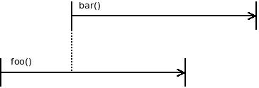

Structured Concurrency
Thread 跟 Coroutine 是兩種常常用來處理 Concurrency 的工具。
使用這兩個工具時，很麻煩的一點就是需要手動管理他們的生命週期。本質上，Thread 跟 Coroutine 都是 global scope，不管你如何建立，他們都獨立在原本的程式順序之外。
常見的例子是，如果你在 main 建立一個新的 thread，main 並不會等 thread 結束，而需要你手動 join thread，在複雜的情況（例如 cancel、timeout）便相當容易出錯。
而 Structured Concurrency 就是試圖將 Thread 的生命週期與大家都很熟悉的 scope 結合。
什麼是 Structured Concurrency
Structured Concurrency 透過 function scope 明確表示 thread 之間的巢狀關係。借用 libdill 的圖(http://libdill.org/structured-concurrency.html)：
沒有 Structured Concurrency 的情況：

有 Structured Concurrency 的情況：

為什麼要做 Structured Concurrency
Thread 跟 coroutine 的全域性質破壞了封裝（encapsulation）：在一個 function 內建立的物件竟然會 leak 到 global scope，造成了管理上的困難。
而 Structured Concurrency 讓我們能建立出熟悉的 scope tree：

Implementation
libdill 是個在 C 實做 Structured Concurrency 的函示庫。在 Kotlin 這類較現代的語言中甚至直接內建了。
有時原始的 Thread 寫起來太瑣碎，這類設計還是能幫人省很多時間的。